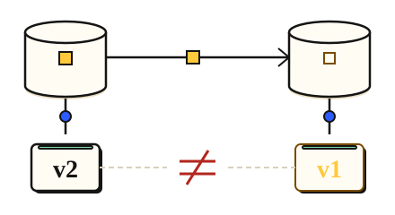

Stay correct · 3 minutes
Which copy is the truth
With several copies, you choose between always-latest and always-fast.
Open this lesson
Two copies, two answers
With a primary and a replica, two people can read different values for a moment. Strong consistency means every read sees the latest write, and costs a little speed. Eventual consistency means copies catch up soon, and is faster and cheaper.
Choose per screen
Read a replica before delivery, then route to the primary. Choose the guarantee for each screen, including the authority needed to serve a latest-value read.
Try the idea
Users must see their own edits at once. Make writes safe and read the latest from the primary.
Key numbers
- Async write
- ≈ 5 ms. approx.
- Sync write to a second copy
- ≈ 8 to 15 ms. adds a round trip, approx.
- Replica lag in trouble
- ≈ 30 s. rare, approx.
Check your reasoning
Think through these questions before opening the lesson. In the game you can test the idea and compare your reasoning.
- Strong consistency means:
- Which screen can be eventually consistent?
- What does sync replication protect against?
The key point
Pick the strongest guarantee only where being wrong would hurt.
Practise this idea
- Hard
Group chat and presence
Teams talk in channels with many people. Everyone sees messages in the same order, sees who is online and who is typing, and gets notified when mentioned. At nine every morning thousands of workplaces start at once, and one announcement can reach a channel of tens of thousands.
- Medium
Peer-to-peer wallet
People split dinner by sending each other money from their phones. A transfer takes money from one balance and adds it to another, and the sender must see the new balance right away. A flaky mobile connection often makes the app send the same transfer twice.
- Hard
Bank ledger
You run the system of record for a regional bank: every deposit, withdrawal and card settlement is a posting that must be exact and permanent. Customers in two continents read balances all day, and regulators can ask for proof at any time. A bad day for you is a loss of even one posting.
- Hard
Stock order matching
Brokers and traders send buy and sell orders, and you pair them fairly: the earliest order at the best price goes first. At the market open a rush of orders arrives in seconds. Every accepted order must be in one agreed sequence, and no trade may be lost or invented.